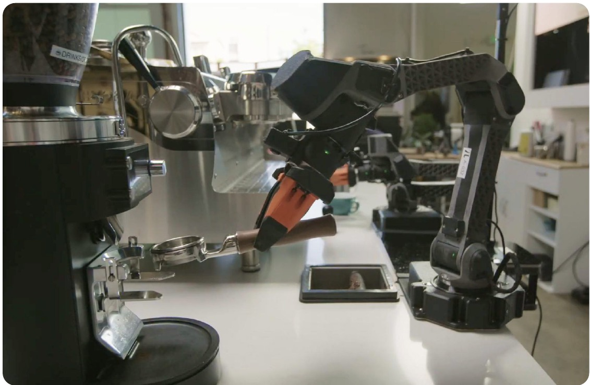
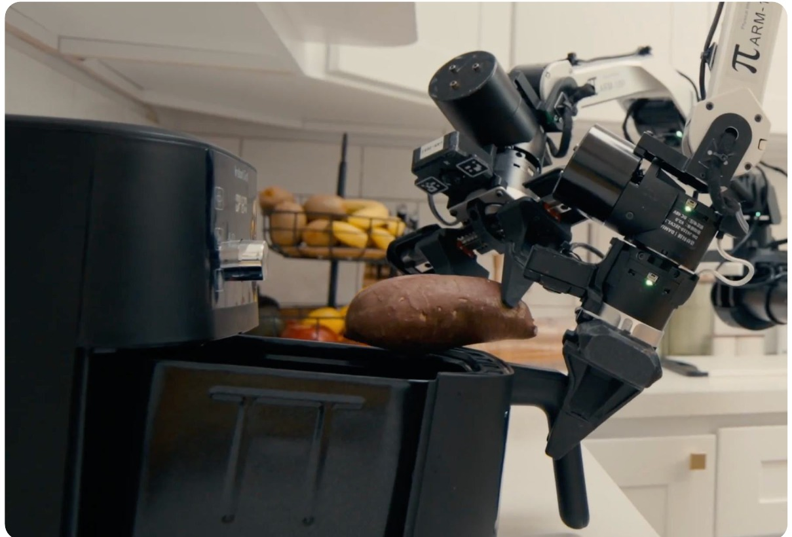
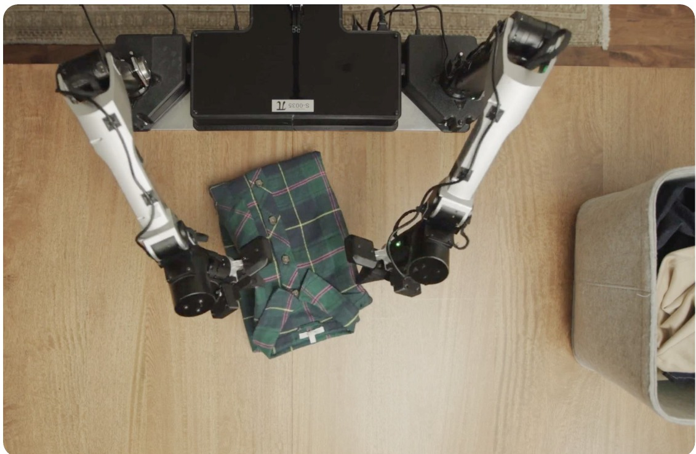
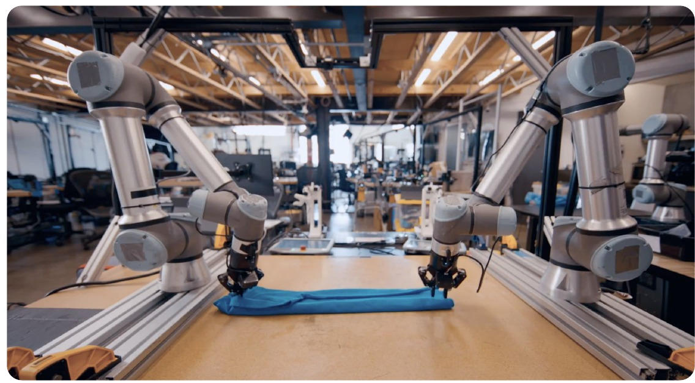

第 24 期 · VLA 入门（四）· Physical Intelligence · 2026-04
π0.7
一个通用模型，零样本追平专门练过的 RL specialist
可lip




π0.7 · PI 官方演示片 · 4 分钟 · pi.website/pi07
00π0.7 能做什么
四种能力，一个模型，不做任务专属微调
Sec.I · pi.website/pi07 官网视频
00回顾
π0.5 → π*0.6 → π0.7
上期一个任务要练一个 RL specialist，这期一个模型全接
2024-10
π0
flow matching
一次出 50 步动作
2025-04
π0.5
五类数据 co-training
先出子任务，再出动作
2025-11
π*0.6
Gemma 3 基座 + RL
每个任务一个 specialist
2026-04 · 本期
π0.7
把「怎么做、做得怎样」
写进 prompt
arXiv 2604.15483 · v2 2026-04-24 · 未开源
00前置 · MEM · 2026-03
MEM：给 VLA 加两级记忆
短期：视频编码器把最近几秒的画面压进当前帧 · 长期：高层策略自己维护的一段语言摘要
MEM · arXiv 2603.03596 · Fig.1
00前置 · MEM · 视频编码器
历史挤进当前帧：token 数和单帧一样
ViT 每 4 层插一次跨时间的因果注意力，不加参数 · 六个记忆任务平均进度 ≈30% → ≈73%（估读） · π0.7 沿用：4 路相机 × 6 帧，448×448
MEM · Fig.3 · Fig.8 · π0.7 Sec.VI-B
01问题
训练过的任务，也要再做一次专属微调
大语言模型
把见过的能力组合成新的
套用没见过的输出格式、做 chain-of-thought、建立不寻常的联系
VLA · 到 π*0.6 为止
新任务做不了，旧任务要微调
想拿更多、更杂的数据换泛化，朴素训练会把不同质量、不同策略平均到一起
Sec.I · Sec.III
02方法 · 数据
好的坏的、机器人的人的，全都要
示范 · 评测时跑出来的自主数据（含 π*0.6 的 RL rollout 和失败）· 人类干预 · 开源机器人数据 · 第一视角人类视频 · 网页 · 视频描述
Fig.1 · Sec.VI-A
02方法 · 数据 · 标注
一条训练数据长什么样
① 子任务指令② 子目标图③ 元数据④ 控制模式 每条数据都配上这四样，训练时随机丢
Fig.3 · Sec.V
02方法 · 数据 · 元数据
元数据：这条数据做得怎么样
Mode: joint
关节控制 / 末端控制
训练时两种都有
推理时固定填：速度取该任务 episode 长度的 15% 分位，质量 5，失误 false
Sec.V-C · Sec.V-D · Sec.VII
02方法 · 数据 · 控制模式
关节控制 vs 末端控制：同一个动作，两种写法
[ θ1 θ2 θ3 θ4 θ5 θ6 夹爪 ]
[ x y z roll pitch yaw 夹爪 ]
电机只认关节角，末端位姿要先过一步 IK · π0.7 两种数据都训，prompt 里一个词切换，唯一不做 dropout 的成分
Sec.V-D · Sec.V-E · Sec.VIII · 示意图自绘
02方法 · 数据 · 机器人硬件
自由度怎么数：臂 6，夹爪 1，底盘 3
自由度 = 能独立运动的轴数；动作向量 = 所有自由度的目标值排成一行 · 模型 → PD 控制器 → 电机 → 编码器读回本体状态 · 50 Hz，UR5e 20 Hz
Fig.4 · Sec.VIII
02方法 · 数据 · 和前几代比 · Prompt Expansion
把 prompt 扩写：做什么、怎么做、做得怎样
π02024-10
<观测>Task: fold the shirt.<本体状态>
只有一句任务
π0.52025-04
<观测>Task: clean the kitchen.Subtask: open the fridge door.<本体状态>
+ 子任务，模型自己先出、再喂给自己
π*0.62025-11
<观测>Task: make a doppio.Subtask: tamp the coffee.Advantage: positive.<本体状态>
+ 好坏，一个 bit
π0.72026-04
<观测><子目标图>Task: peel vegetables.Subtask: pick up the peeler.Speed: 8000.Quality: 5.Mistake: false.Control Mode: joint.<本体状态>
+ 做完长什么样
+ 做得怎样，三项
+ 用哪种控制
做什么做完长什么样做得怎样用哪种控制
训练时每条数据都配上这段上下文；测试时把它填成最好的那一档
π0 · π0.5 Sec.IV-A · π*0.6 Sec.V-B · π0.7 Sec.V-E
02方法 · 架构
架构总览：一个 5B 的 VLA，两个帮手
π0.7：Gemma 3 4B 骨干 + 860M action expert · 高层策略：同架构，出子任务 · 世界模型：BAGEL 14B，出子目标图
Fig.2 · Sec.IV
02方法 · 架构 · 高层策略
高层策略：子任务由它给，或者人现场说
零样本 · 只给一句「把红薯放进气炸锅」· 做不下来 · 5×
Coaching · 人一步一步说 · 做完了 · 1×
高层策略是拿 π0.7 权重微调出来的另一个实例；子任务变成纯输入，人随时能接管，这就是 coaching
Sec.V-A · Fig.14 · pi.website/pi07 官网视频
02方法 · 架构 · 世界模型
世界模型：画出「做完长什么样」
从 BAGEL 14B 初始化，flow matching 预测这一段结束时的画面；三路相机各出一张
Fig.3 · Sec.V-B · Appendix C
02方法 · 训练
训练：随机丢，测试时随便配
带图的样本不能多：有了未来的画面，动作预测退化成 inverse dynamics，学得太快，别的就不学了
Sec.V-E · Sec.VI-C
02方法 · 推理
推理：三个模型异步跑
127ms
开历史编码器 + 子目标图 · 最坏情况
1.25s
世界模型出一张子目标 · 4 张 H100
5 步去噪出 50 步动作，执行 15 或 25 步 · 子目标每 4 秒或子任务变化时刷新
Alg.1 · Sec.VII · Appendix D
03实验 · 开箱即用
同一个模型，不做任务专属微调
pi.website/pi07 官网视频
03实验 · 开箱即用
一个模型，追平四个 RL specialist
T 恤、咖啡持平；多样衣物、装箱吞吐量约 1.45 倍（估读）
Fig.6 上 · Sec.IX-A · 柱状图估读
03实验 · 消融
去掉元数据，或去掉评测数据，都掉
装箱吞吐量 1.0 → ≈0.24（无元数据）/ ≈0.57（无评测数据） · 咖啡成功率 ≈95% → ≈52% / ≈63%
Fig.7 · Sec.IX-A · 柱状图估读
03实验 · 指令跟随
没见过的厨房，跟随开放指令 ≈87%
14 个场景 · 每个 3–6 条指令 · 4 个未见厨房 + 2 个未见卧室 · π0.5 ≈28% → π0.6 ≈54% → π0.7 ≈87%（估读）
Fig.9 · Sec.IX-B · 柱状图估读
03实验 · 指令跟随
语言不够的地方，子目标图来补
复杂指令：π0.7 ≈36%，带子目标图 ≈64% · 微波炉 → 冰箱：只有带图的 π0.7 能做，≈73%（估读）
Fig.10 · Fig.11 · Sec.IX-B · 柱状图估读
03实验 · 跨 embodiment
从没在 UR5e 上叠过衣服
85.6%
π0.7 (GC) · task progress · 成功率 80%
90.9%
10 名前 2% 的遥操作员首次在 UR5e 上叠 · 成功率 80.6%
Fig.12 右 · Appendix F · 人类对照为论文原数
03实验 · 跨 embodiment
源机器人上人在教，UR5e 上它自己叠
UR5e · π0.7 自主 · 左上角是生成的子目标图 · 1×
pi.website/pi07 官网视频
03实验 · 组合泛化
长程新任务：人用语言一步一步教
气炸锅装红薯：π0.5 ≈13% · π0.6 ≈25% · π0.7 ≈97% · 烤百吉饼 ≈47%，加子目标图 ≈79%（估读）
Fig.15 · Sec.IX-D · 柱状图估读
03实验 · 组合泛化
全自主：高层策略出指令，世界模型出子目标图
画面上方是高层策略当前给出的指令，左上角是世界模型生成的子目标图 · 5×
pi.website/pi07 官网视频
03实验 · 数据规模
低质量数据：有元数据是养分，没有是毒药
左：全量数据时吞吐量 ≈23 vs ≈9 次 / 小时 · 右：去掉最多样的 20% 数据，新任务掉到 ≈8%（估读）
Fig.18 · Sec.IX-E · 估读
04小结
局限
作者自己说的
未见任务、未见「任务 × 机器人」组合，成功率 60–80%；已见任务 90% 以上
数据太大太杂，说不清什么是真正「未见」；泛化可能主要是重混已有技能
我读出来的
元数据、分段、失误标注全靠人
5B 只是策略；整套是 5B + 14B 世界模型 + 高层策略，子目标图要 4 张 H100
纯语言的复杂指代只有 ≈36%，靠世界模型把话翻成图来补
只和自家模型比，试验次数正文没说；不开源
Sec.X
2024-10
π0
VLM 骨干 + flow matching
开源 openpi
2025-04
π0.5
五类数据 · 高层 + 低层
一句话进没见过的家
2025-11
π*0.6
从自己的经验里学
13 小时咖啡 · 工厂装箱
2026-04
π0.7
记忆 + 世界模型 + 元数据
一个模型接住全部
上期的一句 Advantage: positive，这期变成了 Quality: 5. Mistake: false.
好坏写进输入这条路，从 specialist 走到了 generalist
下期：具身智能的另一条线，世界模型 / World Action Model
π0.7 未开源 · 元数据条件化和架构无关，可以在 openpi 的 π0.5 上复现